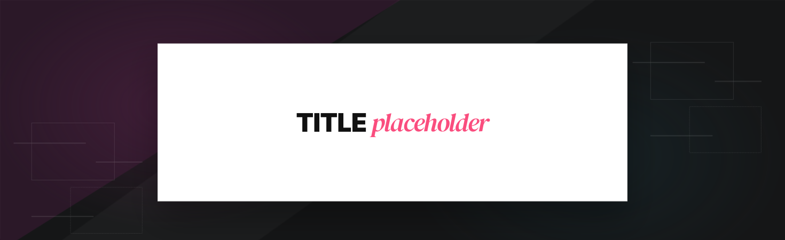
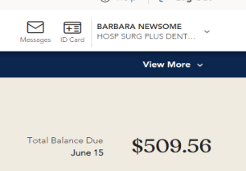
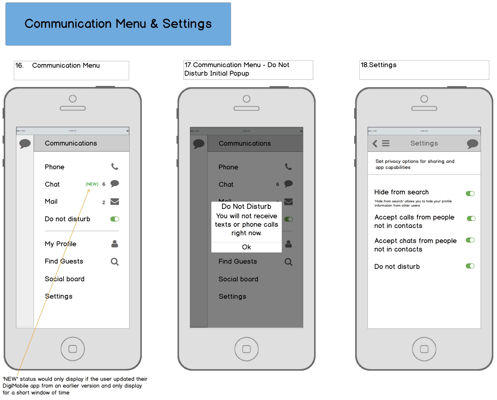

Nickelodeon interactive tv
Case Study
Skinned a scalable branded TV platform which adapted across properties, devices, and future feature expansions.
CONTEXT
I designed the interface for a web-based TV application deployed across Nickelodeon Hotels & Resorts Punta Cana guest suites. The experience was built for large-format, distance-based viewing and remote-control navigation. Design decisions prioritized legibility at a distance, simplified interaction patterns, and strict adherence to Nickelodeon brand standards to ensure consistency across digital and physical guest touchpoints.
- Dashboard component design highlights current payment status and billing actions
- Priority visual hierarchy improves payment completion rates
- Strong UI consistency increases user trust to complete time-sensitive tasks
- Research synthesis applied to design increased completion rates over the previous year
Problem

Above: Original payment dashboard componentThe payments experience plays a critical role in member retention and satisfaction. However, existing payment workflows made it challenging for users to locate billing information quickly and complete transactions efficiently. Members often needed clearer visual feedback around payment status, upcoming balances, and renewal actions, which created opportunities to refine the interface and reduce friction throughout the payment journey.
Design Judgement
- Maintain consistency with the existing design system and component library
- Surface critical billing information in stategic payment management locations
- Improve user journey scannability of balances, payment status, and actions
- Ensure designs aligned with accessibility, state, and engineering constraints
SolutionIntroducing a payment dashboard component allowed members to immediately see their current balance and access the payment center, improving payment conversions and user satisfaction by 30%.


Reflection

Designing the payments experience reinforced how critical clarity and consistency are when users manage important tasks like insurance coverage and billing. When user interfaces clearly communicate status, next steps, and confirmation states, members are able to complete transactions with greater confidence and trust in the platform.
“Aligning UX to both increase payment conversions and improve user satisfaction meets the goals of both sets of users. Synthesizing research into component designs aligned to metrics proves ROI.”